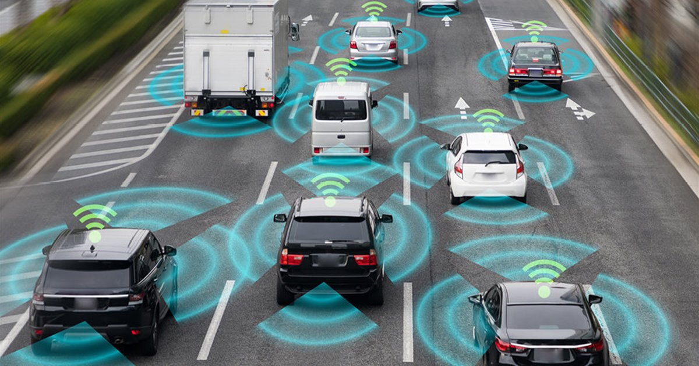
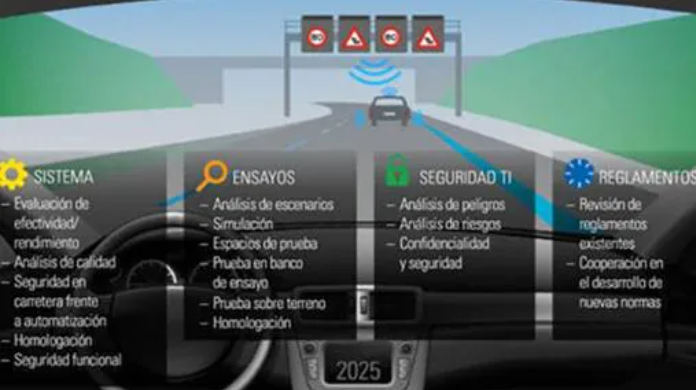
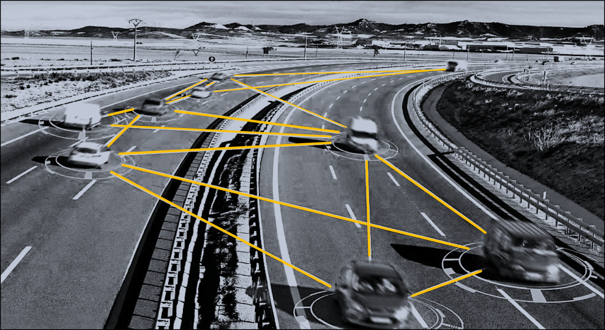

¿Qué es la Conducción Autónoma?
La conducción autónoma es un sistema avanzado de tecnología automotriz que permite a los vehículos operar sin intervención humana. Esto se logra a través de una combinación de sensores, cámaras y software de inteligencia artificial que trabaja en tiempo real. El objetivo principal de la conducción autónoma es mejorar la seguridad vial y la eficiencia del transporte, minimizando el riesgo de accidentes relacionados con errores humanos, como la fatiga o la distracción.
Este tipo de tecnología es capaz de interpretar el entorno del vehículo, tomando decisiones basadas en una variedad de datos. Por ejemplo, puede detectar otros vehículos, peatones y obstáculos, así como leer señales de tráfico y ajustarse a las condiciones del camino. Al hacerlo, no solo se busca facilitar la conducción, sino también hacer que la experiencia de viajar sea más segura y confortable.
¿Cómo Funciona?
El sistema de conducción autónoma funciona mediante la integración de múltiples tecnologías. En primer lugar, utiliza sensores, como radares y LiDAR, para crear un mapa detallado del entorno. Esto permite al vehículo comprender su posición en el espacio y detectar objetos a su alrededor. Las cámaras, por su parte, ayudan a identificar señales de tráfico y otros elementos visuales críticos para la navegación.
Los algoritmos de inteligencia artificial procesan toda esta información y toman decisiones en tiempo real. Por ejemplo, si el sistema detecta que el conductor está perdiendo la atención o está somnoliento, puede activar alertas para intentar reactivarlo. Si no hay respuesta, el vehículo puede activar su modo autónomo, permitiendo que tome el control de la conducción. Esto no solo aumenta la seguridad del conductor, sino también de todos los que están en la carretera.
Características
- Detección del estado del conductor mediante cámaras y sensores avanzados que monitorean la atención y el nivel de alerta.
- Sistema de alertas sonoras y visuales que intenta reactivar al conductor en caso de somnolencia o distracción.
- Capacidad de control autónomo del vehículo en situaciones críticas, garantizando una conducción segura y eficiente.
- Rutas seguras y optimizadas utilizando algoritmos que analizan el tráfico y las condiciones de la carretera.
- Registro de datos sobre el comportamiento del conductor y el rendimiento del sistema para mejorar continuamente la tecnología.
Beneficios

La implementación de sistemas de conducción autónoma tiene el potencial de reducir significativamente los accidentes causados por la fatiga del conductor y mejorar la eficiencia del transporte. Al intervenir de manera temprana y tomar el control del vehículo cuando es necesario, se pueden salvar vidas y reducir los costos relacionados con accidentes de tráfico.
Además, al optimizar rutas y ajustar el comportamiento de conducción en tiempo real, se pueden disminuir los tiempos de viaje y el consumo de combustible. Esto no solo beneficia a los conductores, sino que también tiene un impacto positivo en el medio ambiente al reducir las emisiones de gases contaminantes.
Seguridad y Regulaciones

La seguridad es una de las principales preocupaciones en el desarrollo de la conducción autónoma. Por ello, se cumplen estrictamente todas las normativas de seguridad vial y se realizan pruebas rigurosas para garantizar la efectividad del sistema. Las empresas involucradas en esta tecnología trabajan en colaboración con entidades gubernamentales y organizaciones de seguridad para asegurar que los vehículos sean seguros y confiables.
Además, se están estableciendo regulaciones específicas que guiarán la implementación y el uso de vehículos autónomos en las carreteras. Estas regulaciones están diseñadas para proteger a los usuarios de la carretera y asegurar que la tecnología se integre de manera segura en el tráfico actual. La educación y la concienciación del público también son cruciales para el éxito de esta transición hacia un futuro de transporte más seguro y eficiente.
Volver al Inicio